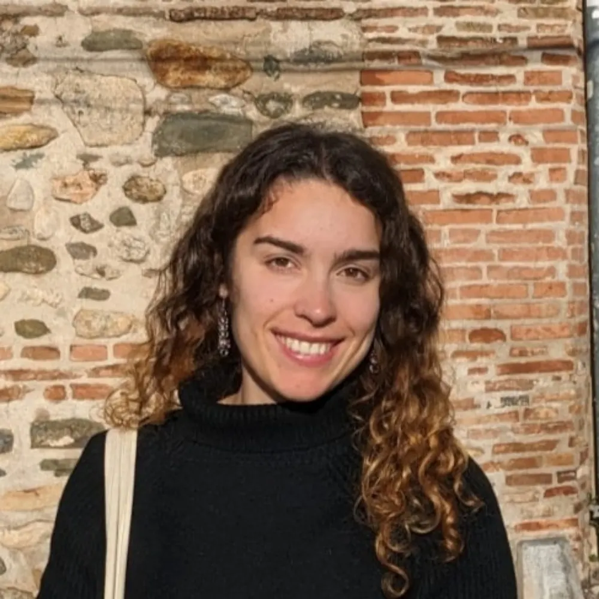

PhD candidate · Mind, Brain and Behavior Research Center · University of Granada
Hi, I am a PhD Student from the Human Neuroscience Lab at the University of Granada. My research focuses on the influence of cognitive control in the brain’s representational dynamics. By combining machine learning techniques with neuroimaging, I try to understand the computations implemented by the brain under varying control demands.
Publications
2025
Richter D., Pena P. & Ruz M. (2025). Rapid computation of high-level visual surprise. iScience, 28.
Pena, P., Palenciano, A. F., González-García, C. & Ruz, M. (2025). Novel verbal instructions recruit abstract neural patterns of time-variable information dimensionality. Journal of Neuroscience, 45(17).